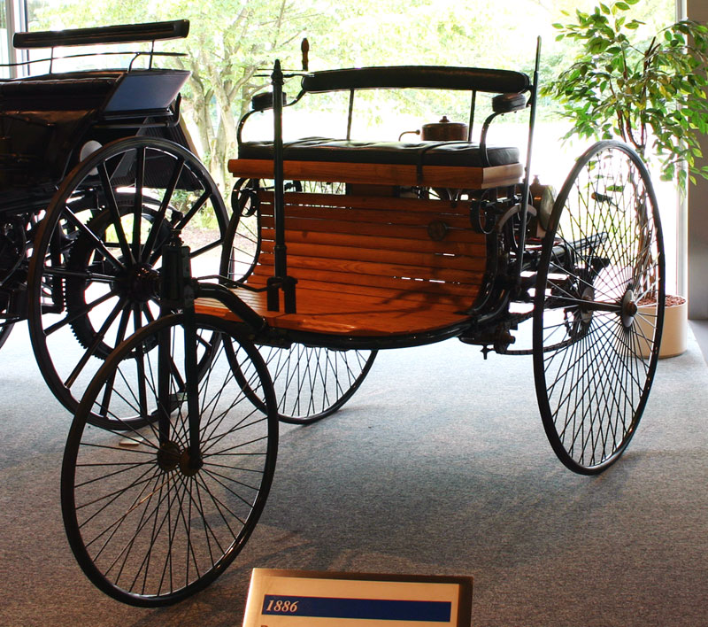
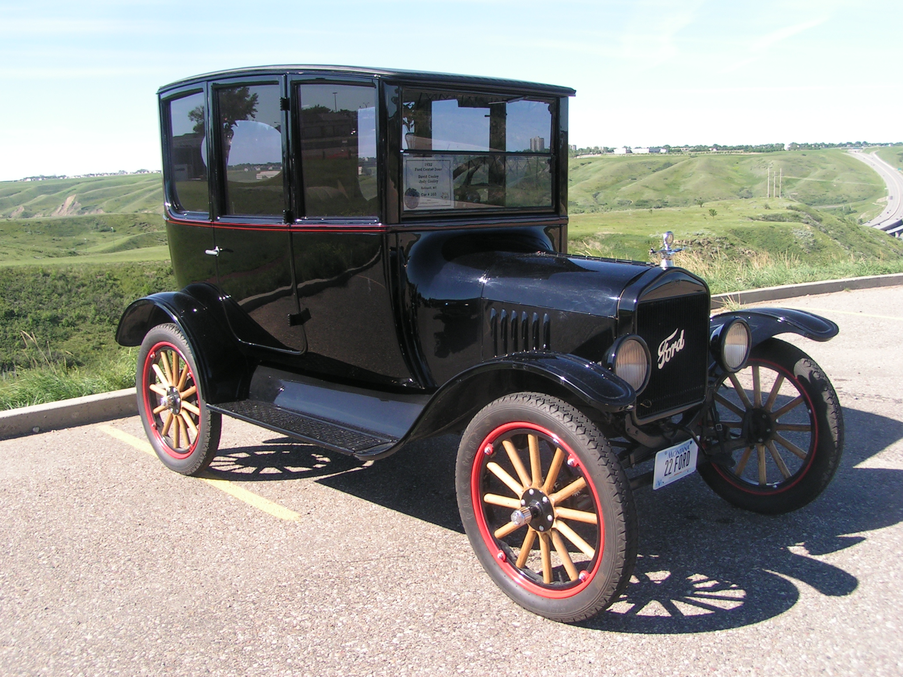
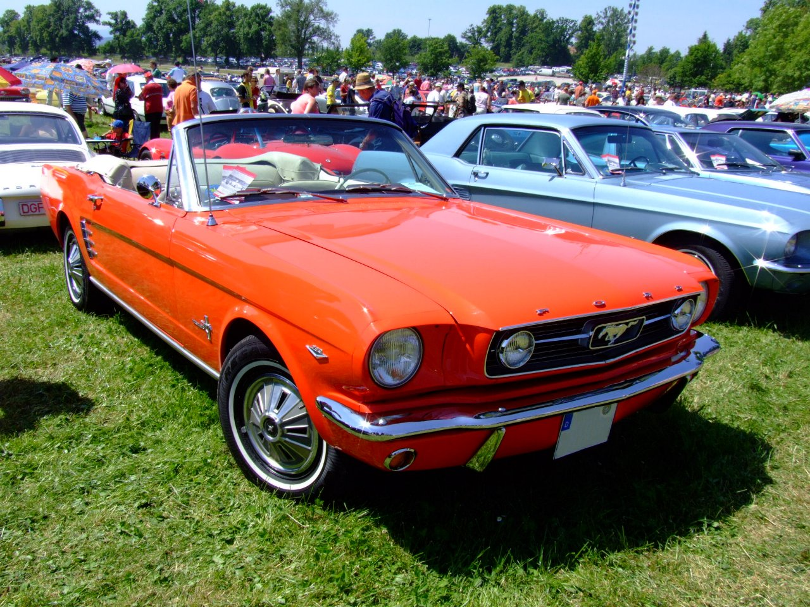
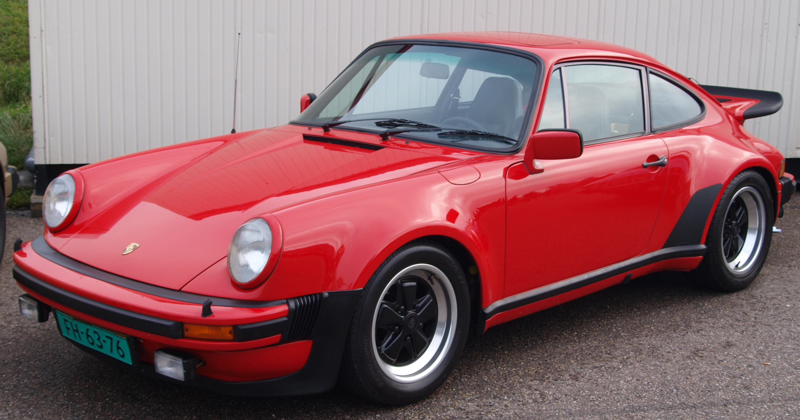
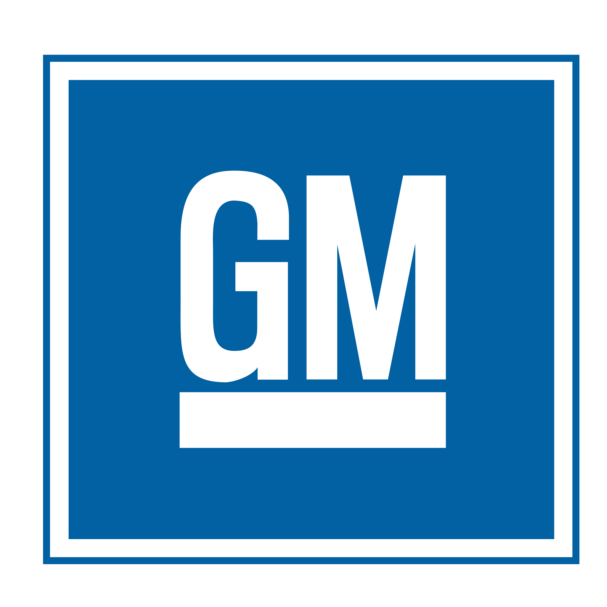
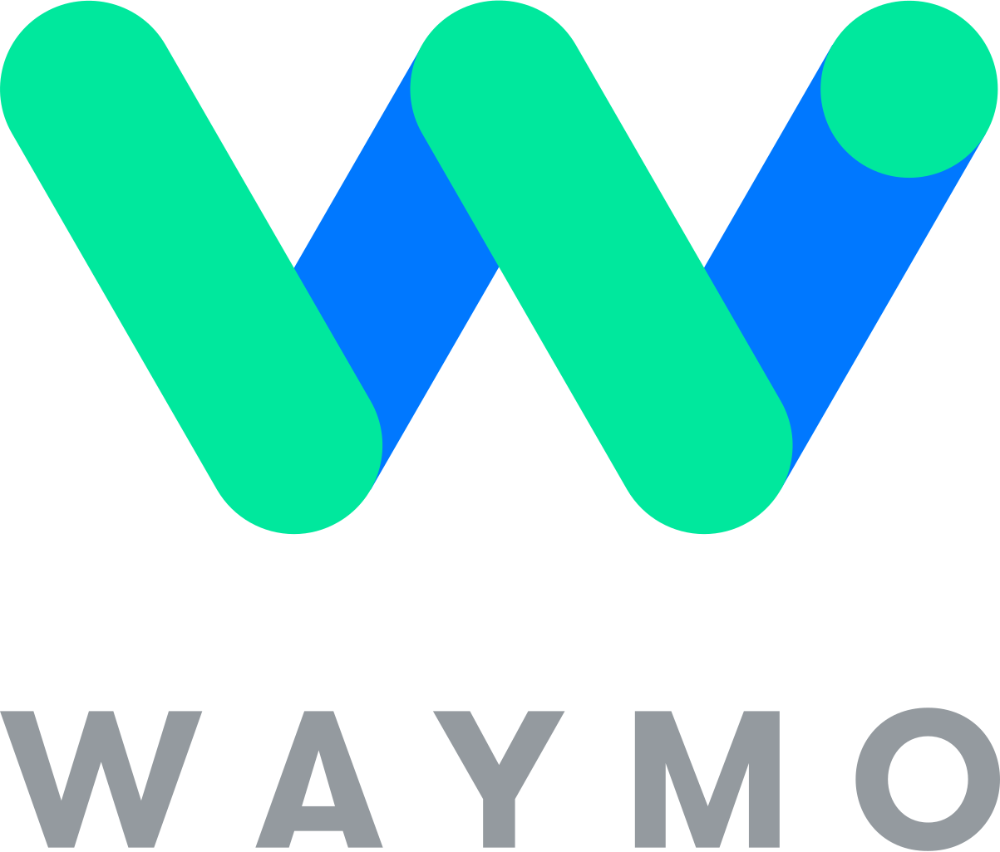
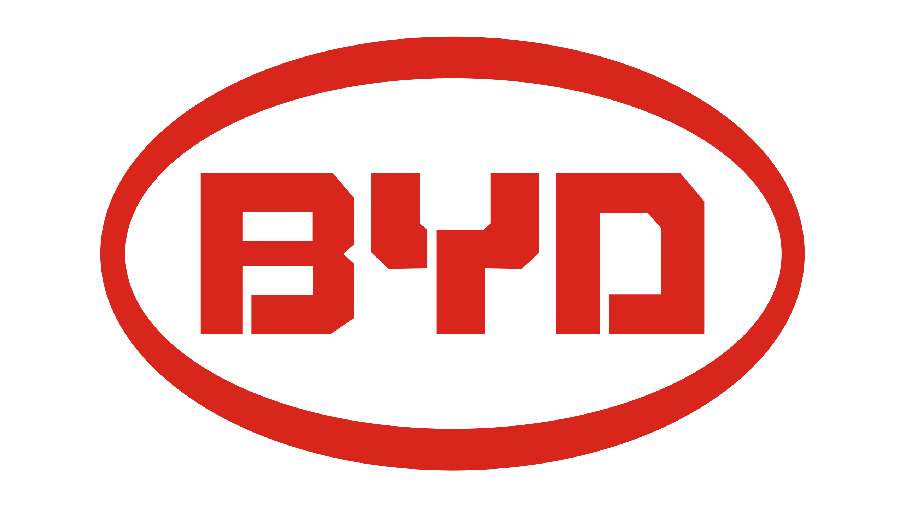
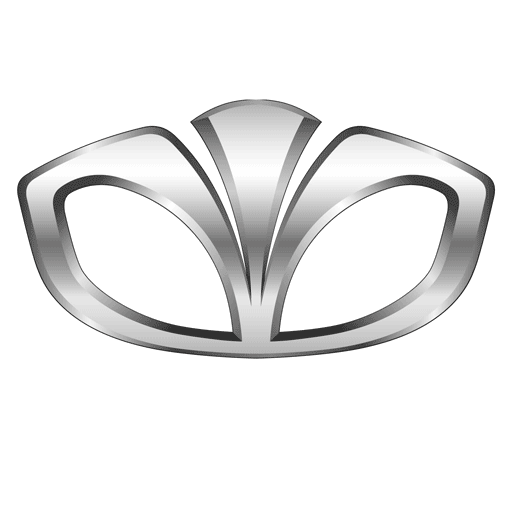

Overview
자동차의 역사는 19세기 말 증기기관의 발명에서 시작됩니다. 이후 내연기관의 등장으로 대중화의 길을 걷기 시작했으며, 20세기를 거쳐 전기차 시대를 맞이한 오늘날까지 끊임없는 기술 혁신과 함께 발전해왔습니다.
Era

1886
탄생의 시대
카를 벤츠가 최초의 가솔린 자동차 '페이턴트 모터바겐'을 발명했습니다. 3륜 구조에 단기통 엔진을 장착한 이 차는 현대 자동차의 원형으로 평가받습니다.

1908
대중화의 시대
헨리 포드의 '모델 T'가 컨베이어 벨트 방식의 대량생산으로 자동차를 일반 대중에게 보급했습니다. 자동차가 사치품에서 이동 수단으로 자리 잡은 전환점입니다.

1938
국민차의 탄생
퍼디난트 포르쉐가 설계한 폭스바겐 비틀(KdF-Wagen)이 등장했습니다. '모든 국민이 탈 수 있는 차'라는 개념으로 탄생해 전후 세계에서 2,100만 대 이상 판매된 역사상 가장 많이 팔린 단일 모델입니다.

1960s
머슬카의 전성기
1964년 포드 머스탱의 등장으로 아메리칸 머슬카 시대가 열렸습니다. 강력한 V8 엔진과 스포티한 디자인이 결합된 머슬카는 미국 자동차 문화의 상징이 되었고, 폰티악 GTO·쉐보레 카마로가 뒤를 이었습니다.

1970s
기술 고도화
오일 쇼크를 계기로 연비 효율과 안전 기술이 급속히 발전했습니다. 에어백, ABS 등 현재 당연하게 여겨지는 안전장치들이 이 시기에 개발됐습니다.

2010s
전동화 시대
테슬라를 필두로 전기차가 대중 시장에 진입했습니다. 배터리 기술의 발전과 함께 주행 가능 거리가 늘어나며 내연기관 중심의 패러다임이 전환되고 있습니다.
Production Volume
세계 자동차 연간 생산량 추이
단위: 백만 대 / 출처: OICA (세계자동차공업협회)
Invention Timeline
1886
페이턴트
모터바겐
모터바겐
1908
포드
모델 T
모델 T

1939
자동변속기
상용화
상용화
1959
3점식
안전벨트
안전벨트
1978
ABS
양산 도입
양산 도입
1997
하이브리드
프리우스
프리우스
2008
테슬라
로드스터
로드스터

2014
레벨2
자율주행
자율주행

2024
전기차
대중화
대중화
Legendary Models


Korea
한국 자동차 산업의 성장
한국의 자동차 산업은 1955년 국제차량제작(주)의 '시-발(始發)' 자동차 조립을 시작으로 본격화됩니다. 1970년대 현대자동차의 포니를 통해 독자 모델 개발에 성공했고, 이후 빠른 성장을 거쳐 현재는 세계 5위권의 자동차 생산국으로 자리매김했습니다.
삼보모터스 — 한국 자동차 부품 산업의 일원
1955
국내 최초 자동차 '시-발' 조립 생산
1975
현대 포니 — 국내 최초 독자 개발 모델
5위
세계 자동차 생산량 기준 한국 순위
Korean Auto Chronicle
1950s
태동기
1955년 '시-발' 자동차 탄생. 미군 부품을 활용한 최초의 국산 자동차.
1960s
도입기
새나라 자동차·닛산 블루버드 조립 생산. 외국 기술 이전으로 대량생산 기반 구축.
1970s
독자 개발
1975년 현대 포니, 기아 브리사 출시. 국내 최초 독자 모델로 기술 자립 선언.
1980s
수출 도약
1986년 엑셀 미국 수출 성공. 첫해 16만 대 판매로 글로벌 시장에 이름을 알림.
1990s
위기와 통합
외환위기로 기아·대우 부도. 현대가 기아를 인수, 현대차그룹으로 재편.
2000s
품질 혁신
제네시스 브랜드 출범, JD Power 품질 지수 급상승. 세계 5위 생산국 진입.
2010s+
미래 모빌리티
아이오닉5·EV6 글로벌 출시, 수소차 넥쏘 양산. 전동화 전환 가속.
Korean Automakers
Founded 1967
현대자동차
1967년 설립 후 1975년 포니로 독자 개발 시대를 열었습니다. 1998년 기아 인수로 글로벌 10위권 그룹으로 성장했으며, 아이오닉5·IONIQ 6로 전기차 시장을 선도하고 있습니다.
전기차 · 수소차 · 제네시스
Founded 1944
기아
자전거 부품 생산으로 출발해 1962년 자동차 생산에 진입했습니다. 1995년 스포티지로 SUV 시대를 개척하고, EV6·EV9으로 디자인 혁신을 이어가고 있습니다.
EV · SUV · 디자인 혁신

Founded 1937
GM 한국
신진자동차→새한→대우자동차로 이어진 역사. 1998년 외환위기로 부도 후 2002년 GM이 인수해 한국지엠으로 재출범. 트레일블레이저·트랙스 등 소형차 중심으로 수출 지속.
소형차 · 글로벌 수출
Founded 1954
KG모빌리티
1954년 하동환자동차에서 출발해 쌍용자동차로 성장. 대우·상하이차·마힌드라를 거쳐 2023년 KG그룹에 인수, KG모빌리티로 새출발. 렉스턴·토레스 SUV로 정체성 회복 중.
SUV 전문 · 국내 독립 브랜드
Global Presence · 2023
한국 자동차 산업은 내수 시장을 넘어 세계로 뻗어 나가고 있습니다. 2023년 기준, 국내에서 생산된 차량의 절반 이상이 해외로 수출되며 세계 5위 자동차 생산국의 위상을 이어가고 있습니다.
0만
연간 생산량
출처: KAMA 2023
출처: KAMA 2023
0만
연간 수출량
출처: KAMA 2023
출처: KAMA 2023
0위
세계 자동차 생산국 순위
출처: OICA 2023
출처: OICA 2023
1955년 폐부품으로 조립한 '시-발' 자동차에서 출발해, 70년이 채 안 되는 시간 동안 한국은 세계 5위 자동차 생산국으로 성장했습니다. 이제 전기차와 수소차를 앞세운 한국의 다음 챕터가 시작되고 있습니다.